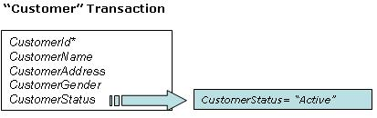
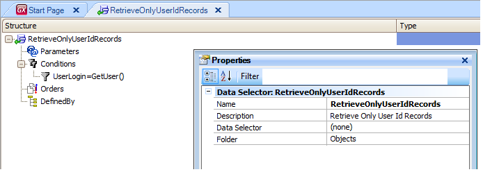

Data Selector object
Stores a set of Parameters, Conditions, Orders, and a Defined By clause, in order to invoke it from different queries, calculations, etc. and reuse the same navigation several times. Defining Data Selectors brings the following advantages:
Example Look at the “Customer” transaction above. It contains the CustomerStatus attribute, and one of the possible values that it stores is “Active”. Suppose that you need to query the "active customers" (CustomerStatus= “Active”) in many objects. For example:
So, it is appropriate to define a Data Selector with the filter condition and invoke it from the necessary places. Defining Data SelectorsOnce a Data Selector has been created, it basically contains:
Look at the following images, which show a Data Selector named "RetrieveOnlyUserIdRecords" that defines the proposed filter:  Invoking Data SelectorsOnce a Data Selector is defined, it can be invoked from: See alsoData Selectors in Grids Videos |